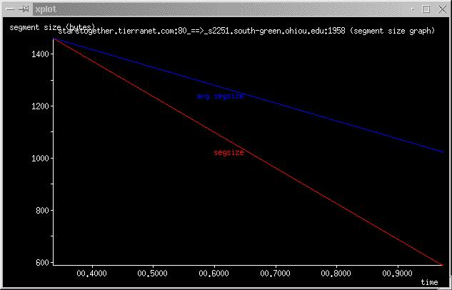

Segment Size Graph
Segment size graphs (named X2Y_ssize.xpl) are generated with the -F
option. A sample segment size graph is shown in Figure 5.12.
Figure 5.12:
Segment Size
|

|
The Y-axis represents segment size in bytes and the X-axis represents time.
- Red Line represents the instantaneous segment size samples.
- Blue Line represents the average segment size seen up to that
point.
Super-User
2003-08-29